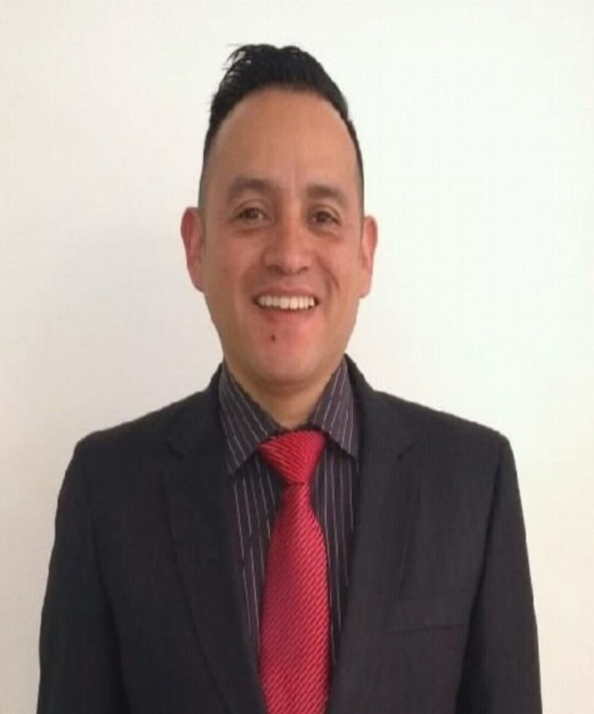

Sobre Mi
Especialista en la administración de los procesos industriales, producción, calidad, planeación, planificación, control y seguridad industrial. Líder de proyectos estratégicos de mejoramiento en la cadena de abastecimiento bajo las filosofías de Lean Manufacturing, Kaizen, 5s, TPM (Gerencia Productiva Total) orientado a optimizar procesos y mejorar el costo industrial. Alta capacidad de liderazgo, desarrollo del talento humano, innovación, análisis y toma de decisiones, contribuyendo a la creciente generación de valor de las organizaciones.

Lider en mejora continua & Director de Producción/Jefe De Planta
Especialista En Mejora Continua
- Años de Experiencia: 20 Años
- Celular: +57 322 4849 506
- Ciudad: Bogota, Colombia
- Mi Web: www.giovanyfranco.github.io
- Correo: giovany.franco.gf@gmail.com
Soy un profesional especializado en mejora de procesos, mediante la aplicación herramientas y puesta en práctica ayudo a las organizaciones a lograr sus objetivos, fortalecer su liderazgo en el sector, con el máximo aprovechamiento del recurso humano. Me considero un apasionado de la filosofía Lean, que busca de manera permanente en conjunto con las personas la mejora continua para lograr un valor perfecto con menor desperdicio. Como responsable de Mejora continua o cómo consultor he participado en diferentes empresas de diferentes rubros liderando proyectos de alto impacto, en los cuales he acumulado millas de experiencia. La compilación de toda esa esa experiencia en conjunto con profesionales y operarios me permite agregar valor en las organizaciones y realizar transformaciones profundas orientadas al plan estratégico trazado por la compañía.
Habilidades
Soy un profesional altamente capacitado, con una amplia gama de habilidades que he adquirido a lo largo de mi carrera. Entre mis habilidades destacan la comunicación efectiva, la resolución de problemas y el liderazgo Además, soy un experto Lean Manufacturing & Six Sigma. He utilizado mis habilidades en diversos proyectos, logrando un impacto positivo en las empresas en las que he trabajado. Además, siempre estoy buscando oportunidades para seguir aprendiendo y actualizando mis conocimientos, lo que me ha permitido adaptarme a nuevos entornos y desafíos.
Hechos
He completado una amplia variedad de trabajos,proyectos en diferentes áreas y contextos. He trabajado en proyectos de Mejora Continua, diseño de líneas de producción, implementación de sistemas de excelencia operacional, entre otros. Cada uno de estos trabajos ha sido una oportunidad para aplicar mis habilidades y conocimientos y contribuir al éxito de las empresas en las que he trabajado. He participado en numerosos proyectos a lo largo de mi carrera, tanto en equipos internos como externos. He liderado proyectos de gran envergadura y he colaborado como experto en proyectos de Lean Manufacturing. Estos proyectos me han permitido adquirir una amplia experiencia en la gestión y ejecución de proyectos y me han brindado la oportunidad de trabajar con profesionales de diferentes áreas y niveles.
Proyectos
Trabajos Completados
Reconocimientos